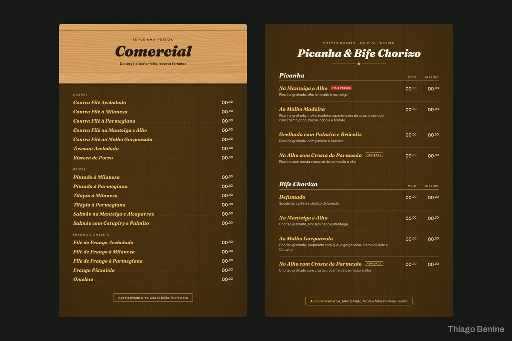
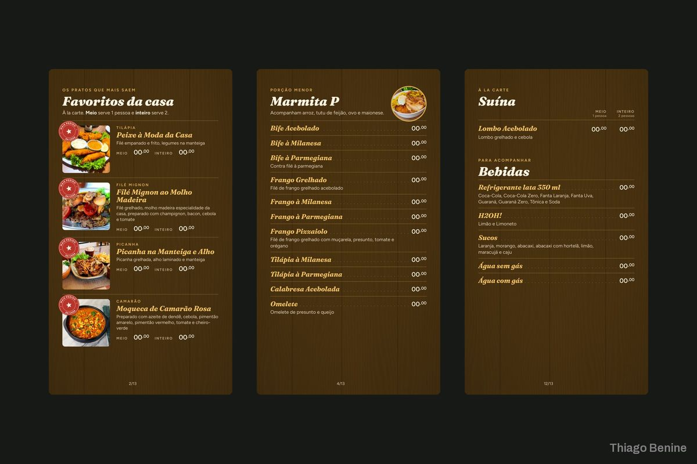

Cardápio reformulado para salão e delivery
Cardápio enxuto, com destaque dos mais pedidos, em versão impressa, PDF leve e imagens para apps de entrega.



Sobre o projeto
Um restaurante tinha um cardápio longo e difícil de ler. Ele foi enxugado e reorganizado, com destaque para os pratos de maior saída e visual limpo nas cores da casa, e saiu em três formatos: impressão para as mesas, PDF leve para enviar por mensagem e imagens no tamanho das plataformas de delivery.
O que foi entregue
- Cardápio do salão para impressão
- PDF leve
- Imagens para plataformas de delivery
Avaliação do cliente
5,0 de 5
Ótimo,ótimo,atencioso,rápido e prestativo